| 日付 | 2010年8月18日（水） - 2010年8月21日（土） | ||||||||
|---|---|---|---|---|---|---|---|---|---|
| 山域 | 南アルプス | ||||||||
| メンバー | 単独 | ||||||||
| 山行形態 | 前夜泊3泊4日テント泊 | ||||||||
| アクセス | 電車、バス | ||||||||
| ルート (Map) |
|
3日目
夜明け前、富士山のシルエットが東の方角に浮かぶ。
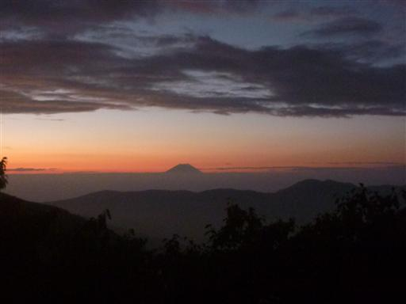
4:35 だいぶ明るくなってきたので出発する。
今日はコースタイムが13時間45分のロングコースを歩かなければならない。
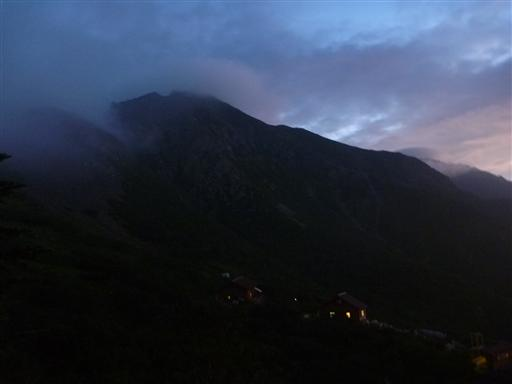
昨年は暴風雨が吹き荒れていたこの稜線だが、今日は比較的穏やかだ。
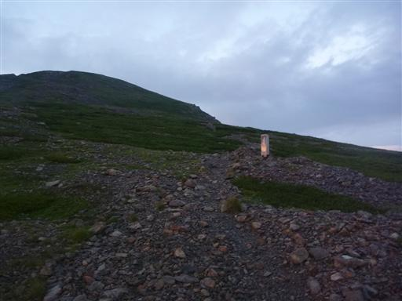
しばらく歩いているとラッキーなことに、ちょうど山と山の間から日の出を迎える。
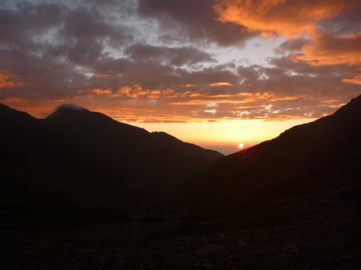
反対方向には微かに虹が出ている。
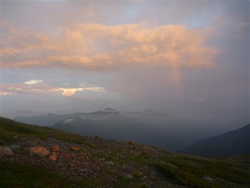
初めて全体像を間近で拝む荒川岳。右側にあるのが荒川東岳だ。
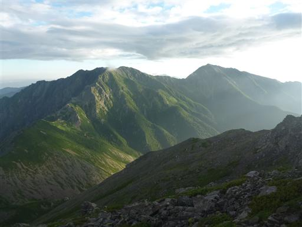
そして目の前に聳えるのは赤石岳。
もう赤石岳の一角に足を踏み入れているので、巨大な赤石岳の全容を望むことはできない。
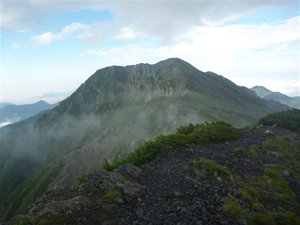
昨年ザックを落としたのはこの辺り。ここから沢沿いに駆け下ってザックを探しに行った。
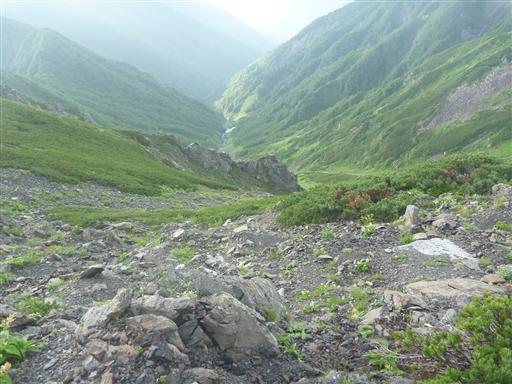
そのまま去年は下山。この分岐点から先は未知の領域だ。
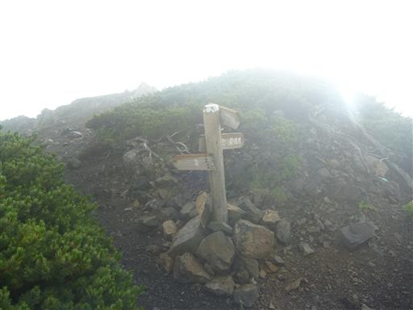
6:44 分岐点から一登りで赤石岳山頂到着。標高3120m。
赤石山脈の名の元となる、赤石山脈の盟主だ。
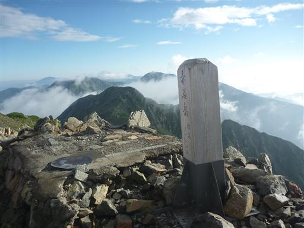
雲が多く絶景とまではいかないが、南アルプスの山々がいくらか見える。
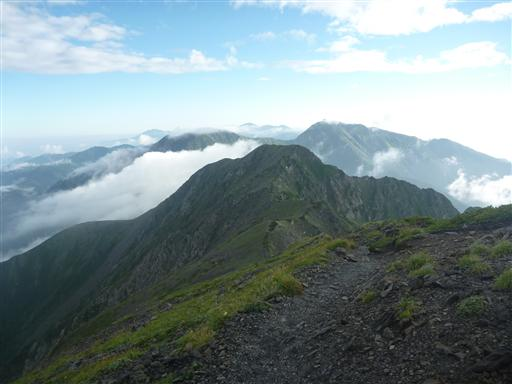
東側にはかろうじて富士山の頭が見えている。
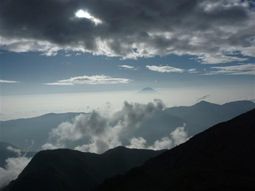
山頂直下には避難小屋が建っている。なかなか立派な小屋だ。

ここから南に連なる縦走路を歩いていく。
この辺りはなだらかな地形が広がっていて、目立ったピークが無い。
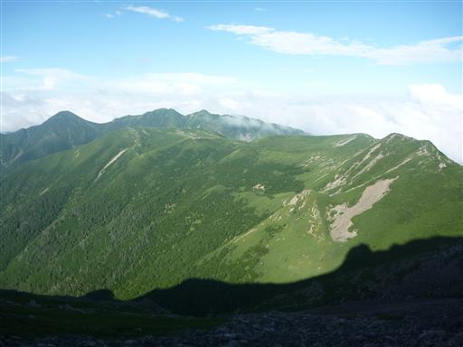
南方に聳えるのは聖岳。一際目を引く巨大な山だ。
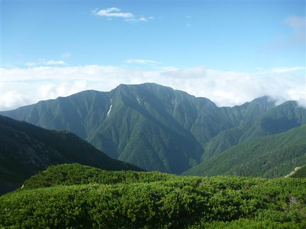
しばらく歩くと稜線は再び雲に覆われてしまう。
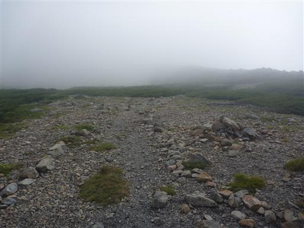
南アは森林限界が高いので、標高の低いところは完全に樹林帯の中に入ってしまう。
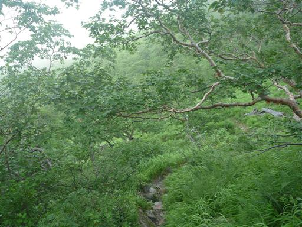
山の谷間にある百間洞山の家。
水を得るため、南アの小屋は稜線から少し外れたところにあることが多い。
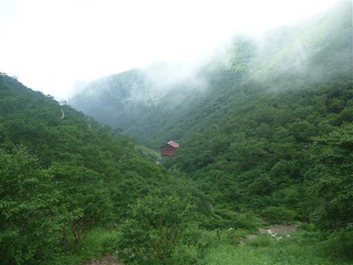
ここから大沢岳まで一気の登り。傾斜がきつくなかなか辛いところだ。
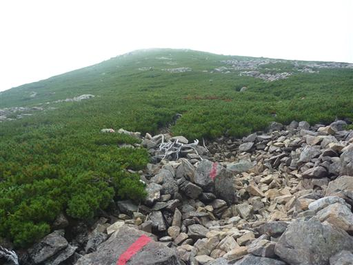
大沢岳に到着。相変わらず展望はない。
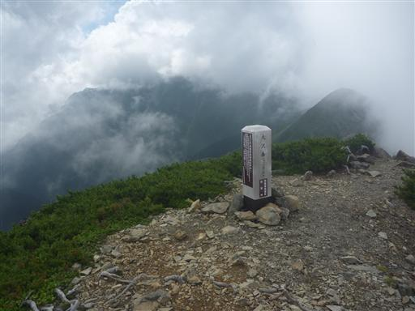
こちらはお隣の中盛丸山。ここまで貧弱な山頂標識を見るのは初めてだ。
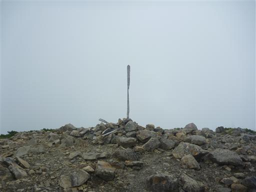
目の前にあるのは雲に隠れた巨大な聖岳。
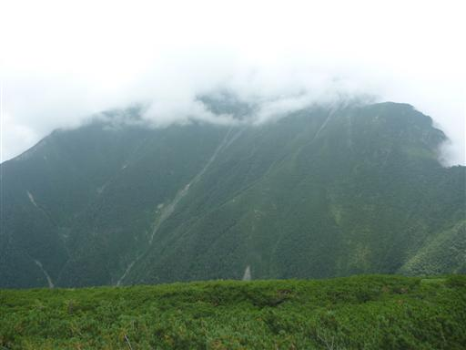
ここから兎岳に向かって再び急登だ。
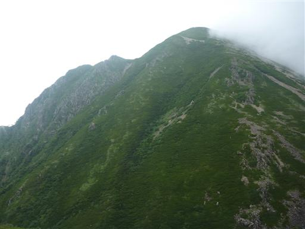
11:30 兎岳山頂到着。標高2818m。
兎岳とは不思議な山名だが、利根川源流にも同名の山がある。
ここまで人の少ない稜線だったが、ここでは団体登山者がたむろしている。
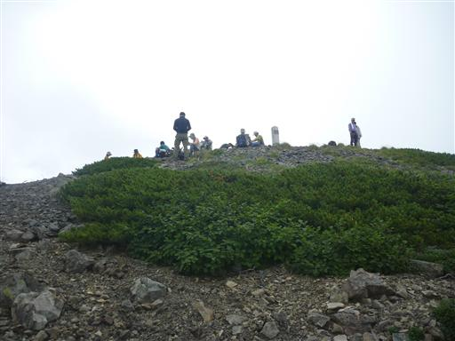
兎岳山頂直下にある避難小屋。
一見とても使えなさそうなボロ小屋だが、中を見ると案外きれいだ。
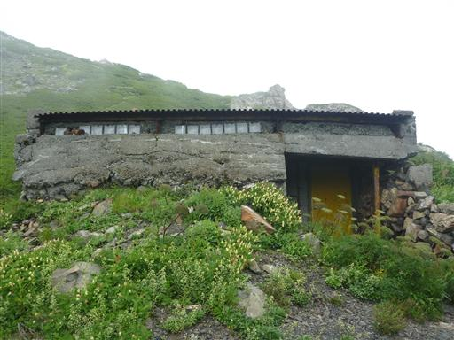
兎岳を下ると聖岳までは再び厳しい登り。
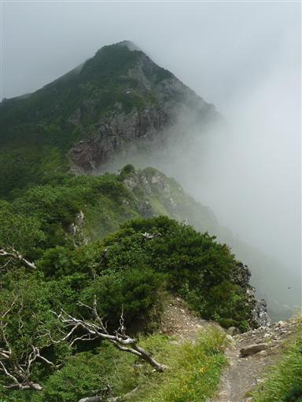
13:36 聖岳山頂到着。標高3013m。
日本アルプス最南の3000m峰だ。
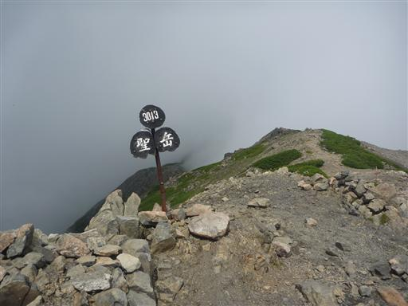
奥聖岳まで往復30分程度なので行って見るが、三角点があるだけのつまらないピークだ。
先ほどのピークが前聖岳、こちらが奥聖岳で、いかにもこちらが本峰っぽい名前だが、
こちらは標高2978mで前聖岳よりも低い。
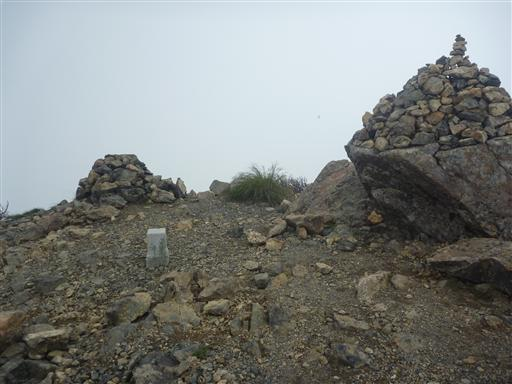
ここから本日の目的地である標高2270mの聖平まで一気に下る。
稜線上のピークから鞍部までの標高差が750mもあるとは驚異だ。
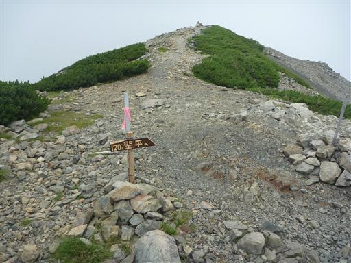
聖岳の南側は険しい斜面が続いている。
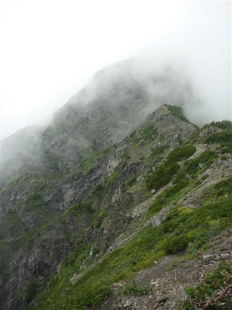
山頂から遥か下方まで下りてくる。少し地味だがこの辺りにはお花畑が広がっている。
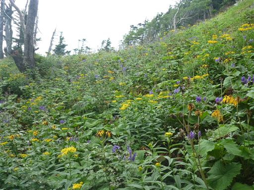
鞍部に到着する。ここから少し下ったところが本日の目的地だ。
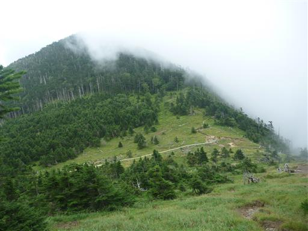
15:36 聖平小屋到着。標高2270m。
かなりのロングコースだったが、まあまあの時間に到着できた。
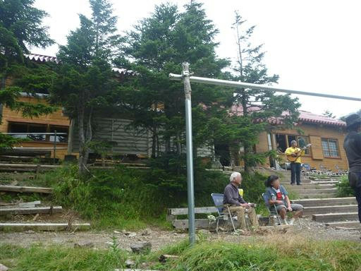